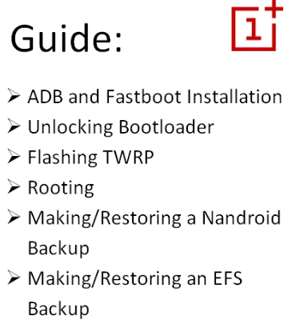

What Rooting Is
What is this and Why should I?
While this video by Marques Brownlee was originally uploaded in 2012, the meaning of rooting is still the same.
If you're new to Android and have done some poking around with themes and the like, then root access definitely isn't for you. Not for the faint of heart, root access allows you to permanently modify specific parts of your operating system so that your phone operates EXACTLY how you wish it to.
Here We Take A Look At Some of the Most-Used, Root-Required Apps For Android
How To Root
The method required to root your phone is different depending on the Android smartphone model and manufacturer you have.
Some models of smartphones, such as the OnePlus Two -built by the not-very-well-known manufacturer OnePlus- is venerable for it's ease to root. ↓ Below is an example of a (clickable) guide for how to root the OnePlus Two in a simple fashion. ↓
Rooting Methods Differ
Again, depending on your phone the methods will differ. Three popular phones are listed below but you can get more root guides from the famed developers on XDA-Developers and other sites. Most of the popular root methods, custom firmwares and apps are on that site however.
- Rooting The Samsung Galaxy S7 (choose model at bottom)
- Rooting The Nexus 6P
- How To Root an LG G5 (choose model at bottom)
- How To Root A OnePlus 3
The Xposed Framework
One app well known amongst various members of the "root-users" of the internet is Xposed.
Though the Xposed framework is capable of some pretty amazing things, from changing the entire way you interface with your device, to removing your carrier name from your status bar up top, it can also be quite damaging...
Xposed will be linked and given screenshots of in a future update...
Custom Roms
Custom "Roms" are known as entire zipped-up, flashable, distributions of the Android operating system. One of the most popular of these is Cyanogenmod. This will be touched upon in future updates...